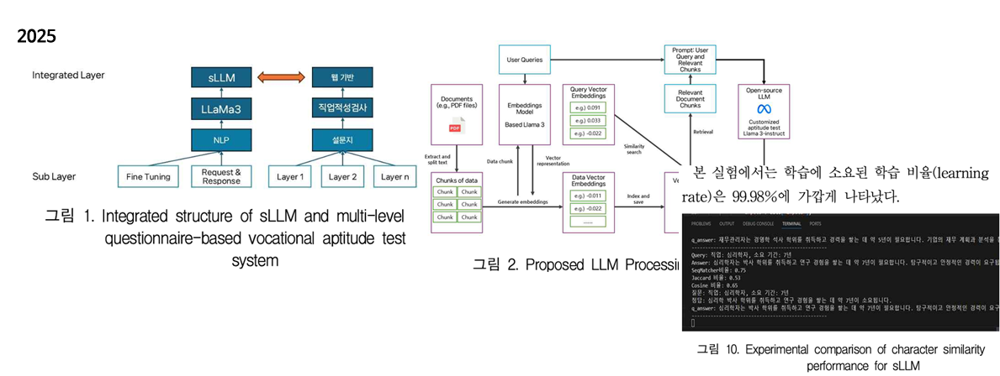

Research Article 3 - 2025. 8(KCI)
A Study on the Development of a Career aptitude Test System in the Form of a Customized Multi-Layer Questionnaire Using sLLM
Do-Yoon Jung, Nam-Ho Kim*
Department of Computer Engineering, Honam University, Gwangju 62299, Korea

Abstract
This paper aims to build an evaluation result production system that integrates career aptitude tests, customized multi-job aptitude questionnaires, and NCS (National Competency Standards) using sLLM (small Large Language Model). This study enables more accurate career aptitude evaluation by automatically generating questions that fit the characteristics of respondents through natural language processing technology using web-based applications and open source LLaMa3 Instruct models. To measure the performance of natural language processing, Jaccard similarity, Cosine similarity, and SequenceMatcher similarity analysis were used to compare the performance of career aptitude-related data sets. As a result of the experiment, among 2,051 data sets, 2,049, 1,962, and 1,963 SequenceMatcher, Jaccard, and Cosine similarities exceeding 0 were counted, respectively, and the average similarities were 44.3% for SequenceMatcher, 30.9% for Jaccard, and 52.4% for Cosine. Additionally, the average similarity rates of the dataset were calculated as 99.9% for SequenceMatcher, 95.6% for Jaccard, and 95.7% for Cosine.